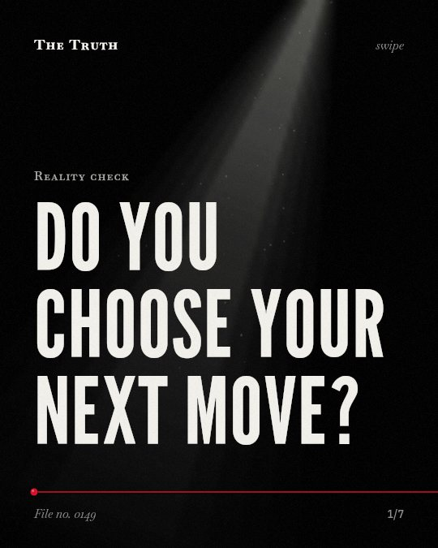

Reality check
Do you choose your next move?

Neural activity precedes your decision to move.
The readiness potential is a slow buildup of electrical potential associated with movement preparation. It occurs before you report making a choice.
Supported. At least one solid peer-reviewed study. The evidence goes against the popular idea.
What the research found
Neither the RP nor the LRP index neural processes are causal of conscious willing.
“neither the RP nor the LRP index neural processes are causal of conscious willing.”
Experiment, 2014. Alexander et al., Oxford University Press eBooks.
Both the RP and the LRP seem unrelated to conscious intentions to move.
“Both potentials seem unrelated to conscious intentions to move.”
Experiment, 2014. Alexander et al., Oxford University Press eBooks.
The link between the Libet paradigm and free will or moral responsibility is not clear.
“While the Libet paradigm may be useful for examining how stimuli affect temporal judgments, the link between this and free will or moral responsibility is not clear.”
Experiment, 2018. Saigle et al., AJOB Neuroscience.
The readiness potential (RP) is a slow buildup of electrical potential recorded at the scalp using electroencephalography that is associated with neural activity involved in movement preparation.
“The readiness potential (RP), a slow buildup of electrical potential recorded at the scalp using electroencephalography, has been associated with neural activity involved in movement preparation.”
Review, 2021. Schurger et al., Trends in Cognitive Sciences.
The readiness potential (RP) precedes the reported time of decision to act by a few hundred milliseconds.
“cognitive neuroscientists such as Benjamin Libet have joined the discussion by demonstrating that an ERP component, the readiness potential (RP), precedes the reported time of decision to act by a few hundred milliseconds.”
Experiment, 2024. SHUM et al., Consciousness and Cognition.
The link to free will is unclear.
Neither the readiness potential nor the LRP index are causal of conscious willing. They seem unrelated to your conscious intentions to move.
The narrative of choice may be a construction.
Your brain prepares for movement before you feel like you decided to act. That may be why your sense of free will feels like a story your mind tells after the fact.
This part is our reading of the evidence, not a finding.
Reaching for a glass of water.
You sit in a dark kitchen at night. Your hand moves toward the glass. You feel like you chose to reach, but the electrical signals started before the thought arrived.
The honest summary
The evidence shows that the readiness potential is associated with movement preparation but is not a causal driver of conscious intention.
The exact nature of the neural processes involved in these potentials remains unclear.
Who is moving your hand?
Sources
- Victoria Saigle, Veljko Dubljević, Éric Racine (2018). The Impact of a Landmark Neuroscience Study on Free Will: A Qualitative Analysis of Articles Using Libet and Colleagues' Methods. AJOB Neuroscience. Experiment, cited 66 times.
- Aaron Schurger, Pengbo Hu, Joanna Pak et al. (2021). What Is the Readiness Potential?. Trends in Cognitive Sciences. Review, cited 189 times.
- Prescott C. Alexander, Alexander A. Schlegel, Walter P. Sinnott-Armstrong et al. (2014). Dissecting the Readiness Potential. Oxford University Press eBooks. Experiment, cited 6 times.
- Yu Hei SHUM, Carl Michael Galang, Marcel Braß (2024). Using a Veto paradigm to investigate the decision models in explaining Libet-style experiments. Consciousness and Cognition. Experiment, cited 3 times.
Also read for this file, not quoted
- Fifel (2018). Readiness Potential and Neuronal Determinism: New Insights on Libet Experiment.
- Braun et al. (2018). The Senses of Agency and Ownership: A Review.
This file was researched and drafted by software, then checked by rules a model cannot talk its way around: each quote above was matched word for word against the paper, and every number had to appear in it. How files are made.